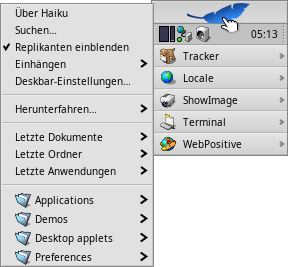
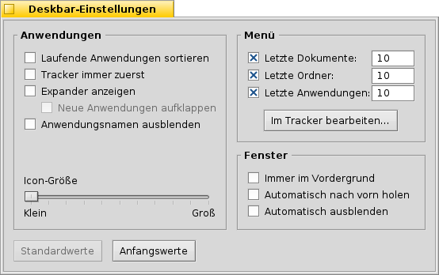
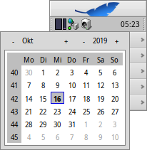
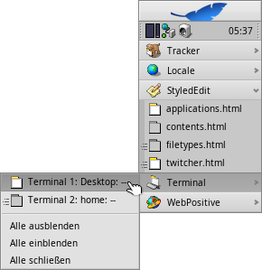

Deutsch
Deutsch Català
Català English
English Español
Español Français
Français Italiano
Italiano Magyar
Magyar Polski
Polski Português
Português Português (Brazil)
Português (Brazil) Română
Română Slovenčina
Slovenčina Suomi
Suomi Svenska
Svenska 中文 ［中文］
中文 ［中文］ Русский
Русский Українська
Українська 日本語
日本語| Index |
|
Das Deskbar Menü Das Tray Die Liste der Programme |
Deskbar
Die Deskbar wird standardmäßig in der oberen rechten Ecke des Desktops angezeigt. Sie ist praktisch Haikus Version von Windows' "Taskbar" und "Startmenü". Sie besteht aus dem Deskbar Menü, von dem aus Programme und Einstellungen aufgerufen werden können, darunter einen Infobereich (das "Tray") mit Uhr und Hilfsprogrammen, sowie eine Liste der gerade laufenden Programme.

Die Deskbar kann in jede der vier Ecken - oder entlang des oberen oder untereren Bildschirmrands - verschoben werden. Hierzu muss die gepunktete Linie seitlich vom Tray mit der Maus zur gewünschten Position gezogen werden. Man kann die Deskbar auch zu einer kompakten Darstellung zusammenschieben, indem man die gepunktete Linie auf das Deskbar Menü zieht.
 Das Deskbar Menü
Das Deskbar Menü
Ein Klick auf den oberen Bereich der Deskbar öffnet dieses Menü:
Über dieses System - zeigt grundsätzliche Informationen zum installierten System, zu Lizenzinformationen und Danksagungen.
Suchen... - öffnet den Query Dialog; ein mächtiges Werkzeug zum Suchen und Finden.
Replikanten einblenden - zeigt/verbirgt die kleinen Symbole, mit denen Replikanten verschoben, entfernt oder deren Kontextmenüs geöffnet werden.
Einhängen - öffnet den gleichen Dialog zum Einbinden von Partitionen, wie bei einem Klick auf den Desktop (siehe Datenträger einbinden).
Deskbar-Einstellungen... - öffnet ein Dialogfenster um die Deskbar anzupassen (siehe unten).
Herunterfahren... - bietet die Möglichkeit zum oder des Systems.
Letzte Dokumente, Ordner, Anwendungen - eine Liste der kürzlich geöffneten Programme, Dateien und Ordner (siehe weiter unten).
Anwendungen, Demos, Desktop-Apps, Einstellungen - eine Liste aller installierten Programme, der Demo-Programme und der System-Einstellungen.
Einträge wie Verküpfungen zu Anwendungen, Dokumenten oder sogar Query-Suchen können hinzugefügt werden, indem man sie im Ordner ~/config/settings/deskbar/menu/.
Deskbar-Einstellungen

Das Fenster der Deskbar-Einstellungen ist in drei Abschnitte gegliedert.
Anwendungen
Folgende Einstellungen betreffen nicht etwa installierte Anwendungen, sondern Verhalten und Erscheinungsbild der Liste der gerade laufenden Anwendungen.
| Ordnet die Liste laufender Programme alphabetisch. | ||
| Selbst wenn alphabetisch sortiert wird, bleibt Tracker immer erster in der Liste. | ||
| Über ein kleines Symbol lassen sich die Fenster eines Programms direkt unter seinem Eintrag in der Deskbar ein- und ausklappen. | ||
| Fenster neu gestarteter Programme werden automatisch unter deren Eintrag in der Deskbar ausgeklappt. | ||
| Es werden nur noch die Icons der laufenden Anwendungen angezeigt. | ||
| Ändert die Icon-Größe der laufenden Anwendungen. |
Menü
Während die ersten paar Menüpunkte der Deskbar unveränderlich sind, lassen sich diejenigen unter anpassen.
Hier lässt sich die Anzahl der kürzlich geöffneten Dokumente, Ordner und Anwendungen einstellen, die in den entsprechenden Menüs der Deskbar erscheinen.
öffnet den Ordner ~/config/settings/deskbar/menu/. Hier befinden sich die Dateien und Ordner aus der Deskbar, standardmäßig , , und .
Einträge wie Verküpfungen zu Anwendungen, Dokumenten oder sogar Query-Suchen können hinzugefügt und wieder gelöscht werden, indem man sie einfach in diesem Ordner ablegt bzw. entfernt.
Programme die mittels Paketen installiert werden, erscheinen automatisch im Deskbar Menü. Hat man viele Pakete installiert, kann das schnell unübersichtlich werden. Will man volle Kontrolle und nur die Anwendung sehen, die man selbst dorthin verlinkt hat (womöglich in Kategorien in Unterordnern), geht das so:
Man erzeugt eine Verknüpfung vom menu Ordner in ~/config/settings/deskbar/ und nennt ihn menu_entries. Im Terminal gibt dafür ein:
ln -s ~/config/settings/deskbar/menu ~/config/settings/deskbar/menu_entries
Fenster
Zu guter letzt, die Einstellungen für das Deskbar-Fenster.
| Die Deskbar bleibt immer im Vordergrund über allen anderen Fenstern. | ||
| Wird die Deskbar vom Mauszeiger berührt, springt sie automatisch in den Vordergrund. | ||
| Die Deskbar wird auf eine Größe von wenigen Pixeln verkleinert und nur beim Berühren mit dem Mauszeiger aufgeklappt. |
Das Tray

Im Tray befindet sich unter anderem die Uhr. Lässt man den Mauszeiger kurz auf ihr ruhen, erscheint das Datum in einem Tooltip. Ein Linksklick zeigt einen Kalender, ein Rechsklick öffnet ein Kontextmenü mit dem die Uhranzeige aus- und eingeschaltet und zur Einstellung das Panel Datum & Zeit geöffnet werden kann.
Das Tray steht jedem Programm zur Verfügung, um dort Informationen oder Einstellungsmöglichkeiten für den Benutzer bereit zu stellen. So ändert sich zum Beispiel das Icon des Mailsystems, sobald ungelesene E-Mails vorhanden sind. Der Systemmanager ist ein weiteres Beispiel. Er zeigt durch Balken die aktuelle Prozessor-Last und Auslastung des Hauptspeichers und bietet über ein Kontextmenü weitere Informationen und Aktionen.
Die Liste der laufenden Programme

Hier werden alle Programme angezeigt, die gerade aktiv sind. Durch einen Klick auf ein Programm kann man zu diesem, respektive zu einem seiner Fenster, wechseln. Mit einem Rechtsklick lassen sich alle Fenster einer Anwendung ein-/ausblenden oder oder schließen und damit das Programm beenden.
Ein SHIFT STRG Klick auf eine Anwendung blendet all ihre Fenster aus, ein STRG Klick blendet sie wieder ein.
Bei aktivierter Einstellung "Expander anzeigen" in den Deskbar-Einstellungen, kann man über das kleine Dreieck die Liste der einzelnen Fenster eines Programmes direkt unterhalb des jeweiligen Eintrages in der Programmliste anzeigen lassen.
Das Symbol vor den Einträgen der einzelnen Programmfenster zeigt Informationen zu diesem Fenster. Ein farbiges Icon repräsentiert ein sichtbares Fenster, ein ausgegrautes Icon ein minimiertes Fenster. Linien vor dem Icon deuten darauf hin, dass das Fenster auf einer anderen als der aktuellen Arbeitsfläche ist.